Skills
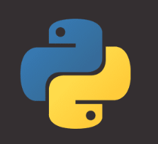
 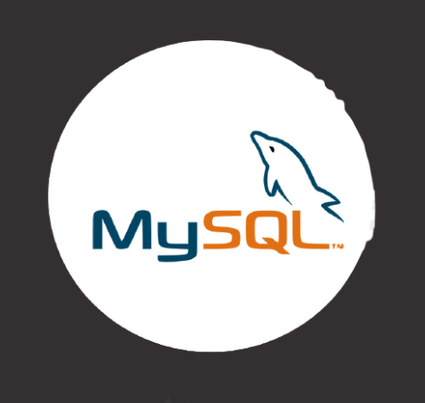
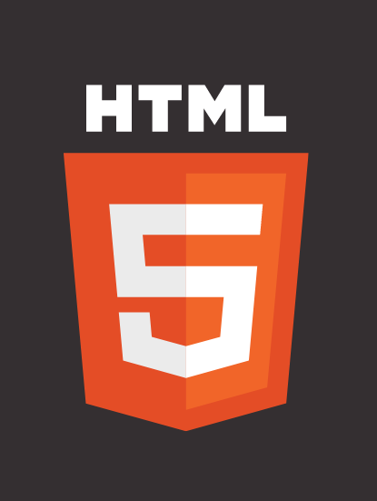
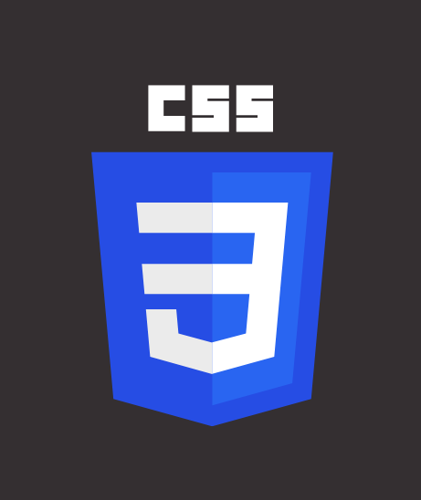
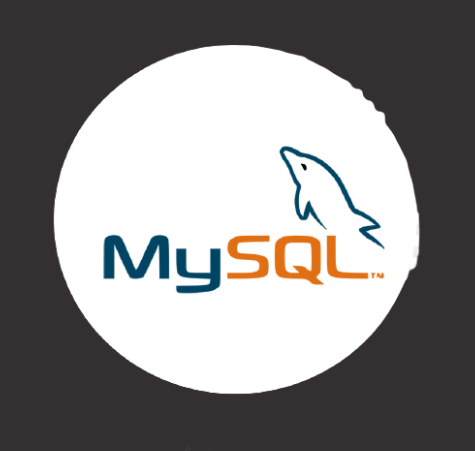
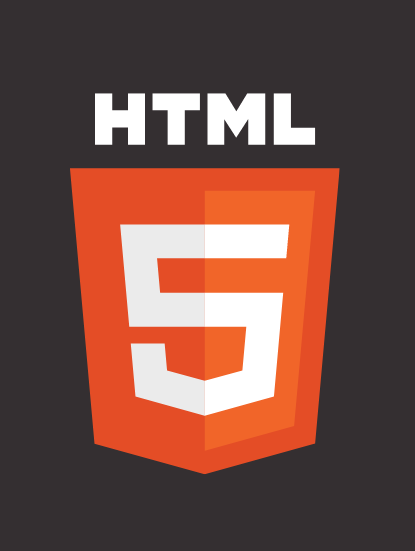
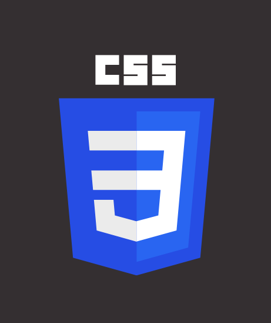
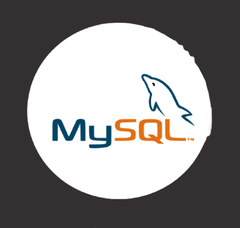
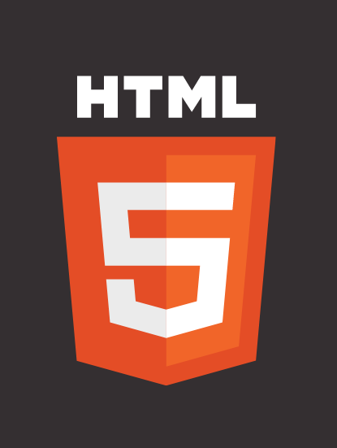
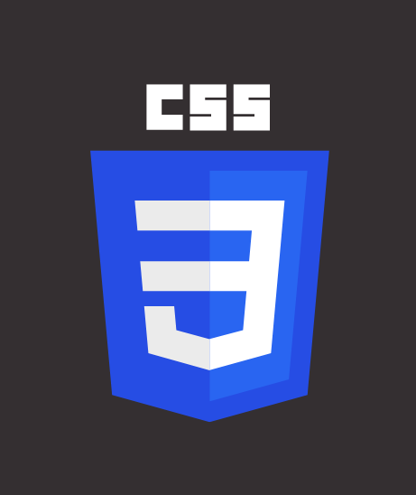
As a data science and AI learning student, I am passionate about leveraging data-driven insights to solve complex problems. With a strong foundation in statistics, machine learning, and programming, I am constantly exploring innovative ways to extract valuable knowledge from vast datasets. I thrive in collaborative environments, where I can apply my analytical skills to derive actionable recommendations. By continuously enhancing my expertise in cutting-edge technologies, I aim to make a significant impact in the field of data science, contributing to the development of intelligent systems that drive meaningful change.
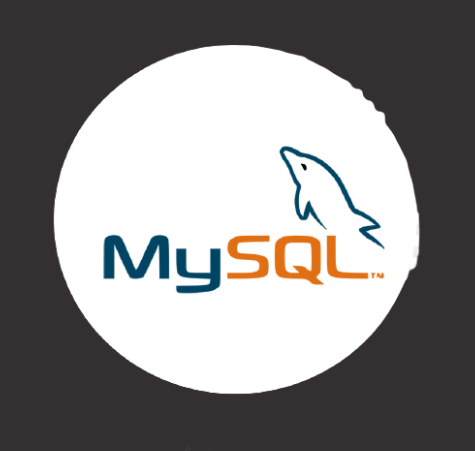
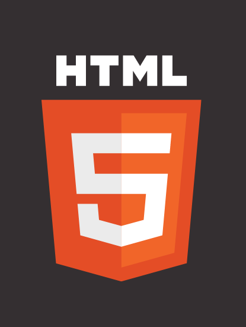
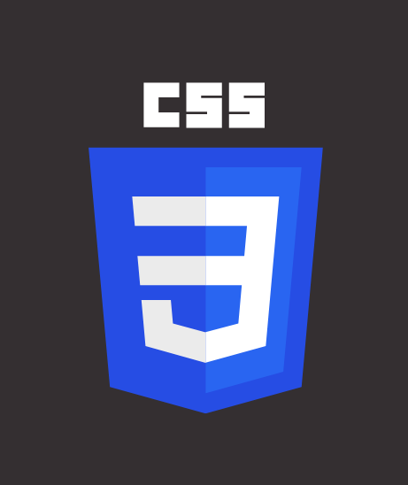
This project is a web-based face detection system built using Flask, Python, and OpenCV. The system allows users to upload an image and detects faces in the image using the pre-trained Haar cascade classifier model. The detected faces are then highlighted by drawing rectangles around them. The resulting image with the detected faces is displayed back to the user. The project utilizes Flask as a web framework to handle the image upload and rendering of the HTML templates. OpenCV is used for image processing and face detection. The system provides a user-friendly interface for face detection and can be easily extended for further enhancements or integration into larger applications.
The stock price prediction project is a web application that utilizes machine learning techniques to forecast future stock prices based on historical data. It employs a Long Short-Term Memory (LSTM) model, a type of recurrent neural network, to learn patterns and relationships in the historical stock price data. Users can input the symbol of a company, and the application retrieves live data from Yahoo Finance, trains the LSTM model, and generates predictions for the next ten days. The predicted prices are displayed on an interactive web page along with a plot of the historical and predicted stock prices. This project aims to assist users in making informed investment decisions.
The weather forecasting project using Flask is a simple web application that allows users to retrieve real-time weather information for a given city. The project utilizes the OpenWeatherMap API to fetch weather data based on the user's input. Users can enter a city name in the provided form, and upon submission, the application makes an API request to obtain the weather data. The retrieved data includes temperature and weather description, which is then displayed on the results page. The project leverages the Flask framework to handle the HTTP requests and render HTML templates. It provides a user-friendly interface for accessing weather forecasts quickly and conveniently.
The image-to-text converter project is a web application that allows users to upload an image and extract the text content from it. Built using Python, Flask, and HTML, the application provides a user-friendly interface where users can select an image file and click "Upload" to initiate the text extraction process. The uploaded image is processed using the Tesseract OCR engine, which recognizes text within the image. The extracted text is then displayed on the web page, providing users with an easy way to convert image-based text into editable and searchable content. The project offers a practical solution for tasks like digitizing documents, extracting information from images, and more.
This project is a spam detection system built using NLTK (Natural Language Toolkit) and Flask in Python. It aims to classify text messages or emails as either spam or non-spam (ham) based on their content. The system utilizes the NLTK library for performing sentiment analysis, which evaluates the sentiment or polarity of the given text. By analyzing the sentiment score, the system determines whether the input text is more likely to be spam or ham. The Flask framework is used to create a simple web application that allows users to enter text and receive instant feedback on whether it is spam or not.